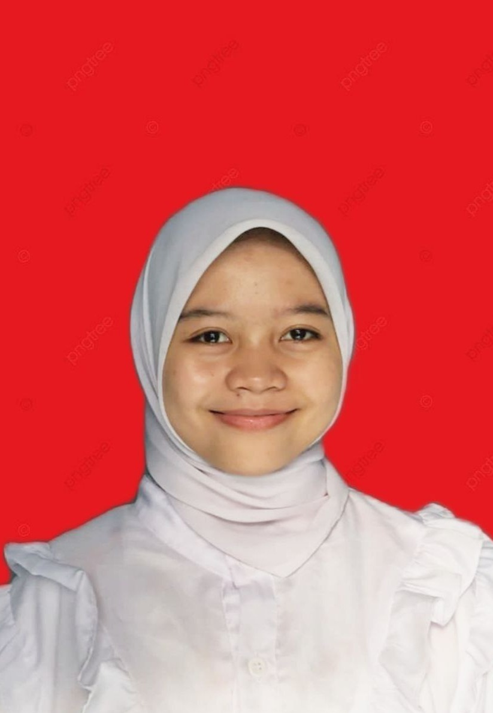

Frissenda Septrianur Marinda Karno Putri
Mahasiswa Pendidikan Guru Sekolah Dasar
Universitas Trunojoyo Madura
NIM: 220611100069
📋 Data Pribadi
Nama Lengkap
Frissenda Septrianur Marinda Karno Putri
NIM
220611100069
Universitas
Universitas Trunojoyo Madura
Fakultas
Keguruan dan Ilmu Pendidikan
Program Studi
Pendidikan Guru Sekolah Dasar (PGSD)
Email
smkpfrissenda@gmail.com
🎓 Riwayat Pendidikan
Pendidikan Guru Sekolah Dasar
Universitas Trunojoyo Madura
NIM: 220611100069Fakultas Ilmu Pendidikan
Universitas Trunojoyo Madura
📞 Kontak
Email
smkpfrissenda@gmail.com
Universitas
Universitas Trunojoyo Madura
Program Studi
Pendidikan Guru Sekolah Dasar (PGSD)